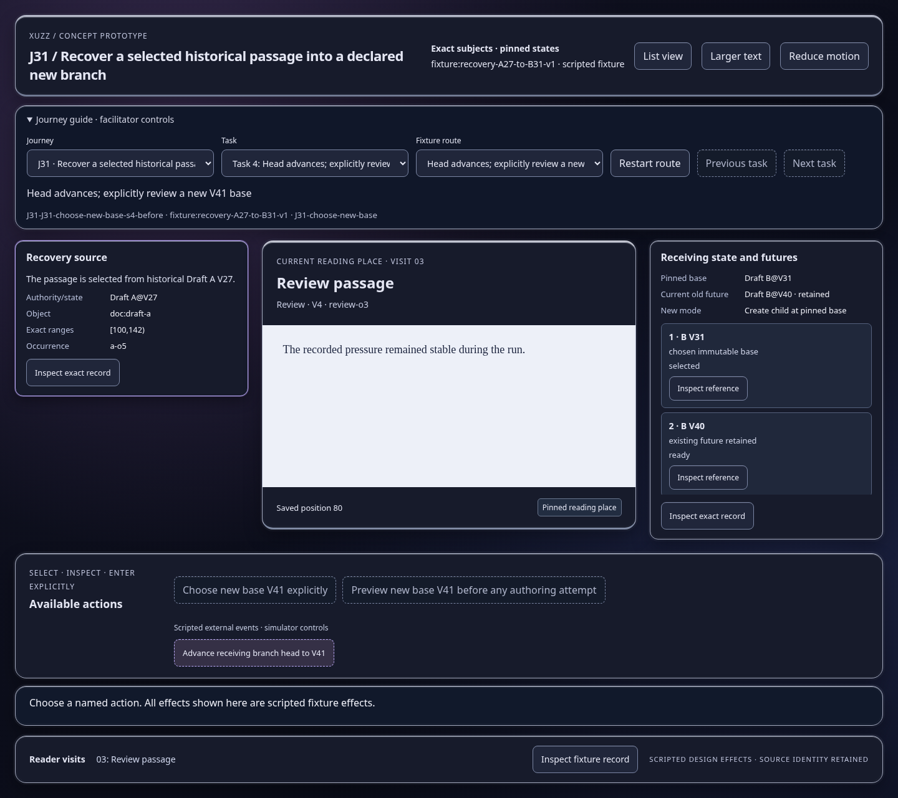
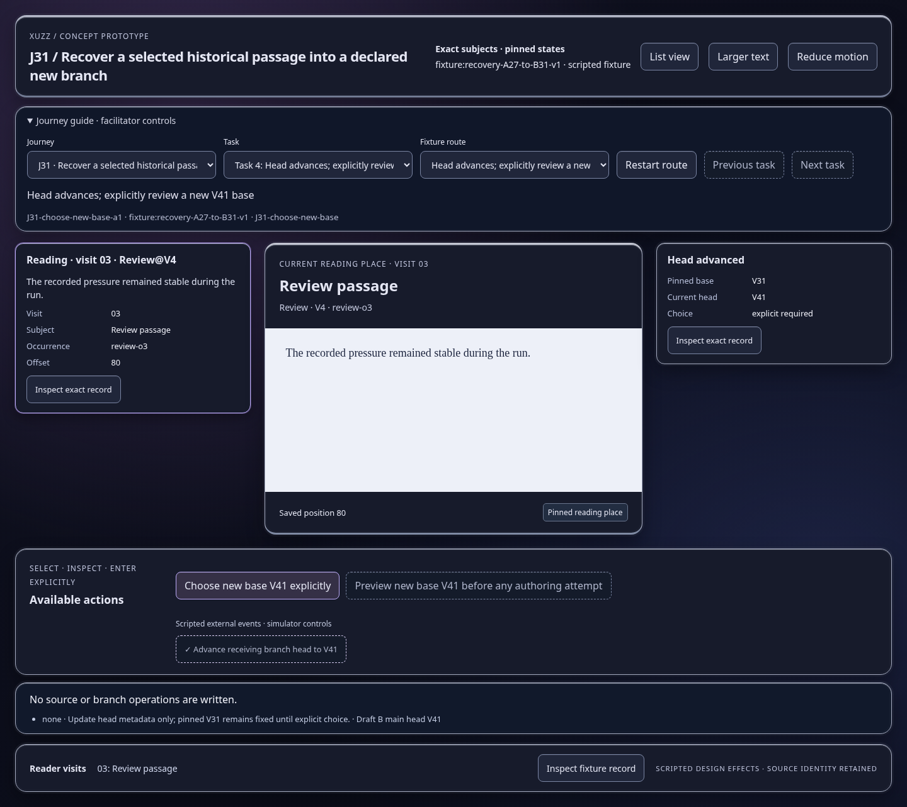
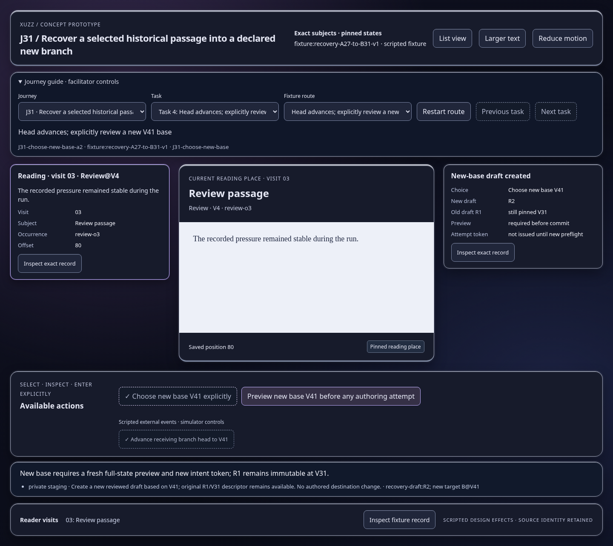
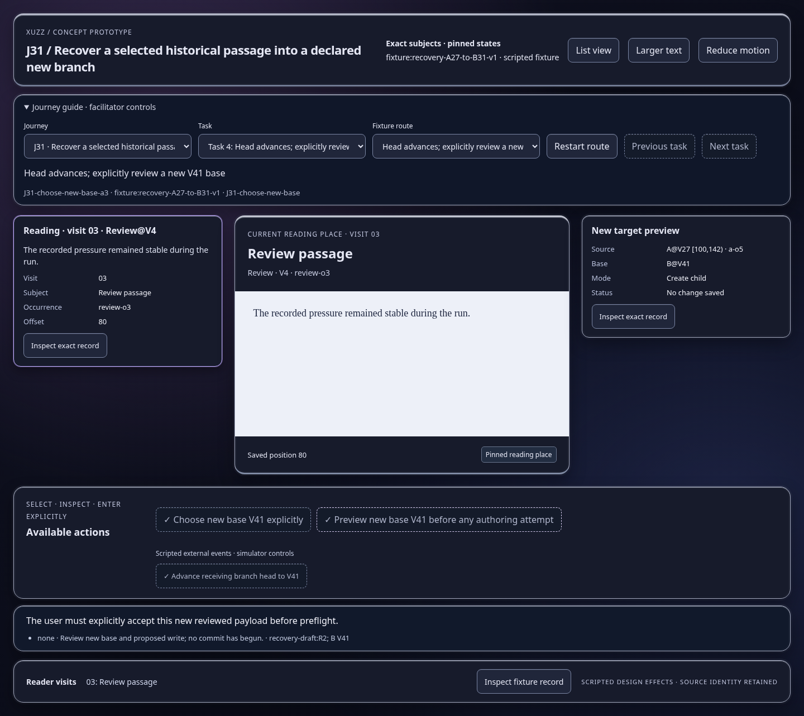

Scripted concept states; inspect the effect and identity trace. Images show actual prototype rendering.

No source or branch operations are written.
Open this represented state
New base requires a fresh full-state preview and new intent token; R1 remains immutable at V31.
Open this represented state
The user must explicitly accept this new reviewed payload before preflight.
Open this represented state